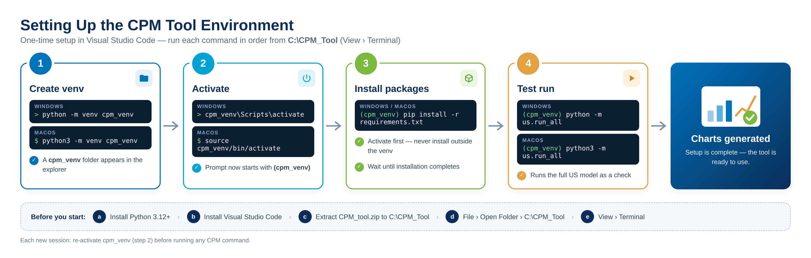
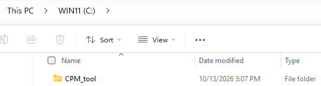
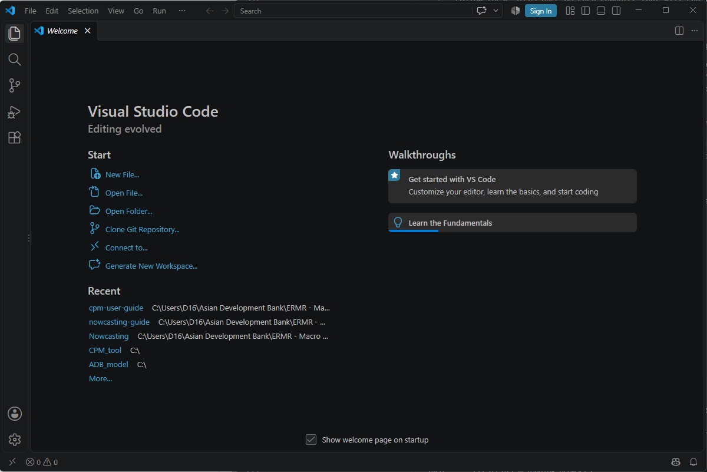
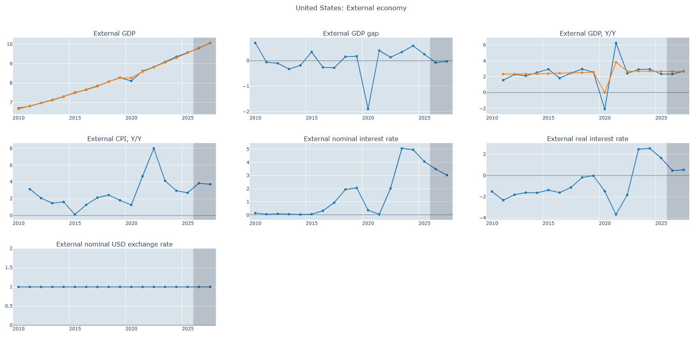
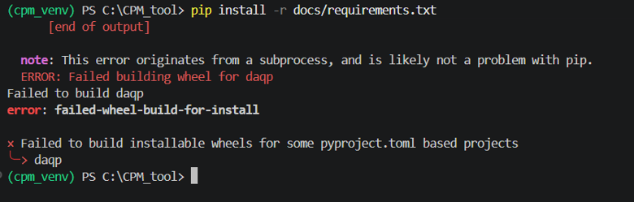
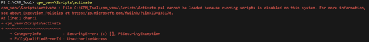

Getting Started¶
Before running any forecast, prepare your computer so that the CPM Tool can run in its own Python environment.
- Check that your machine meets the System Requirements.
- Follow Installation and Setup to install the software
System Requirements¶
| Requirement | Minimum |
|---|---|
| Python | Version 3.12 or later |
| Code editor | Microsoft Visual Studio Code |
| Memory | At least 8 GB of RAM |
Installation and Setup¶
Follow these steps once on each computer that will run the CPM Tool.

Step-by-step¶
- Download and install Python 3.12 or later.
- Download and install Microsoft Visual Studio Code.
-
Create a new folder in drive C and name it
CPM_Tool.
-
Extract
CPM_tool.ziptoC:/CPM_Tool. -
Open Visual Studio Code.

-
Go to File › Open Folder, then select
C:\CPM_Tool. -
Open terminal. Go to View › Terminal.
-
Create the CPM tool Python environment. Enter the following command in the terminal:
Check the explorer
Verify in the Visual Studio Code explorer that the
cpm_venvdirectory now exists. -
Activate the environment. Enter the following command in the terminal:
Activate first
The terminal prompt should show
(cpm_venv)before you install packages. -
Install the required Python packages listed in
requirements.txt. Enter the following command in the terminal:Python package dependencies
docs/requirements.txtCheck that all the packages listed below are installed in the
cpm_venv\Lib\site-packages(for Windows) orcpm_venv/lib/python3.x/site-packages(for macOS) folder. -
Test run. Enter the following command in the terminal:
-
Chart generation confirms that the setup is complete.

Troubleshooting¶
-
Fails to Install
daqp
This error happens because
pipis trying to compile the Python packagedaqpfrom source (building a wheel). This requires a C/C++ compiler and build tools (such as a C++ compiler orCMake) that are missing or not properly configured in your Windows PowerShell environment.Here is how to fix it.
Install pre-built wheels or Microsoft C++ Build Tools
The easiest way is to make sure
pipcan download a pre-compiled wheel, or to install the required build tools so it can compile.Step 1: Upgrade pip, setuptools and wheel
First step
Run the following command to make sure your package installers are up to date. This often allows
pipto fetch compatible pre-compiled binaries:Verification
Check that the output shows successfully updated versions of pip, setuptools and wheel.
Step 2: Install Microsoft C++ Build Tools (if compilation is required)
Alternative method
If an up-to-date wheel isn't available for your Python version, you need the compiler toolchain:
- Download the Visual Studio Build Tools.
- During installation, select the workload "Desktop development with C++".
-
Complete the installation and restart your terminal.
Verification
Run
clin PowerShell to check that the Microsoft C/C++ compiler is accessible in your path.
-
Failed to activate environment
cpm_venv
This error occurs because PowerShell restricts running scripts by default for security reasons. The safest and easiest way to fix this is to change the execution policy for your current terminal session only.
Step 1: Bypass the execution policy for the current session
Recommended and least invasive
Run this command in your PowerShell terminal to allow scripts to run in the current window:
Verification
Type
Get-ExecutionPolicy -Scope Processand confirm that it returnsUnrestricted.Step 2: Activate the virtual environment
Now run your activation command again:
Verification
Check that your terminal prompt now starts with
(cpm_venv).